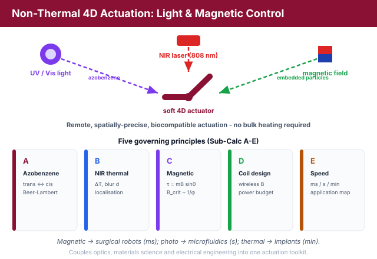
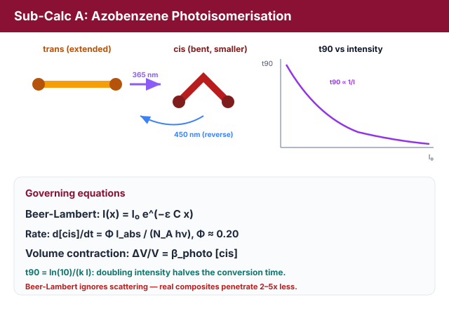
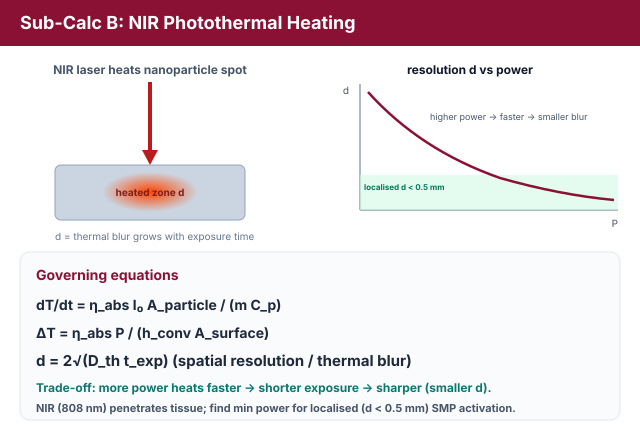
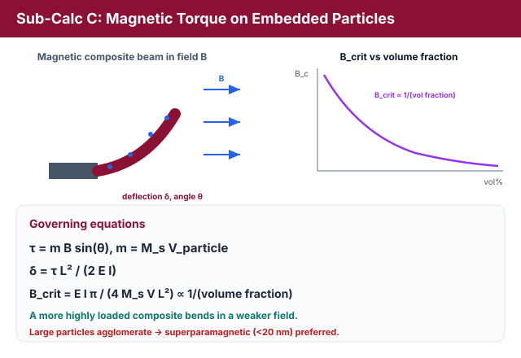
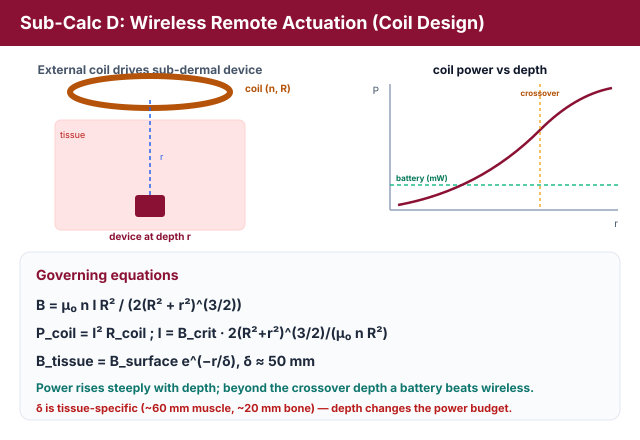
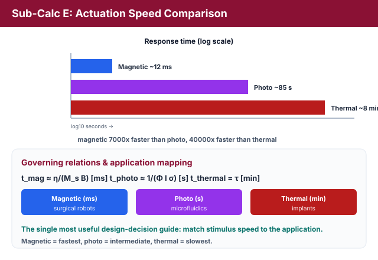
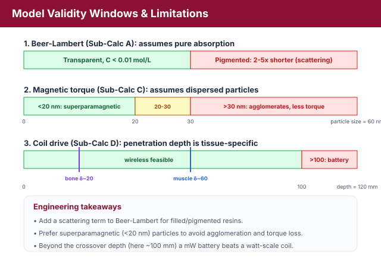

Non-Thermal 4D Actuation: Light-Driven & Magnetically-Controlled Smart Structures
Theory: Non-Thermal 4D Actuation - Light & Magnetic Control
1. Beyond Heat: Remote, Precise, Biocompatible Actuation
Thermal actuation is the most common 4D-printing stimulus, but many applications need actuation that is remote, spatially precise, or biocompatible in ways heat cannot provide. This experiment quantifies light-driven and magnetically-controlled actuation, connecting optics, materials science, and electronics.

Figure 1: Three remote stimuli - UV/Vis light, an NIR laser and a magnetic field - actuate one structure, with response times spanning milliseconds to minutes.
2. Azobenzene Photoisomerisation: trans -> cis - The Light-Driven Actuator Strip (Sub-Calc A)
Azobenzene (AZO) molecules switch between an extended trans and a bent cis form under light. UV light (365 nm) drives trans -> cis; visible light (450 nm) reverses it. The light intensity decays with depth x according to the Beer-Lambert law:
where ε is the molar absorptivity and C is the AZO concentration. The photoisomerisation rate is set by the absorbed photon flux:
with quantum yield Φ ≈ 0.20 for AZO and photon energy hν. Integrating gives a first-order approach to the photostationary state, cis = [cis]pss(1 − e−k·I·t), so the time to reach a given conversion is inversely proportional to intensity:
Doubling the intensity halves the conversion time. The bent cis isomer occupies less volume, producing a photo-induced volume contraction:

Figure 2: UV light drives the extended trans isomer to the bent cis form (visible light reverses it); the volume change produces a heat-free, reversible photomechanical response.
This is the fundamental light-driven shape-change mechanism, and because the trans <-> cis switch needs no heat, it enables fast, reversible, room-temperature actuation.
3. NIR Photothermal Actuation - The NIR Skin-Activated Implant (Sub-Calc B)
Near-infrared (NIR, ~808 nm) light penetrates tissue far better than UV. Embedded NIR-absorbing nanoparticles (e.g. gold nanorods) convert the light to heat, locally triggering a shape-memory transition. The local heating rate is:
and the steady-state temperature rise balances absorbed power against convective loss:
Heat then diffuses sideways, blurring the activated region. The spatial resolution (thermal blur) grows with exposure time:

Figure 3: NIR-absorbing nanoparticles convert light to heat at a spot; higher power reaches the activation temperature faster, shrinking the thermal-blur radius d.
There is a clear trade-off: higher laser power heats the spot to the activation temperature faster, so a shorter exposure is needed and the thermal blur d is smaller. To achieve localised activation (d < 0.5 mm) the laser power must exceed a minimum value, while ΔT must still clear the SMP activation threshold (ΔTrequired ≈ 25°C from Experiment 1).
4. Magnetic Torque on Embedded Particles - The Magnetic Catheter Tip / Micro-Gripper (Sub-Calc C)
A composite filled with magnetic particles (Fe3O4 or NdFeB) responds to an external field, enabling wireless actuation. A particle of magnetic moment m in a field B feels a torque:
This torque bends a magnetic-composite beam. For small angles the tip deflection is:
The critical field to bend the beam through 45° follows from setting the magnetic moment against the elastic restoring moment:

Figure 4: An external field torques the embedded dipoles and bends the composite beam in milliseconds; the critical field falls as the particle volume fraction rises.
Because the effective magnetisation scales with particle volume fraction, Bcrit scales inversely with the particle volume fraction: a more highly loaded composite bends in a weaker field.
5. Wireless Remote Actuation: Coil Design - The Wireless Coil Driving an In-Body Robot (Sub-Calc D)
To actuate a sub-dermal device, an external coil must produce Bcrit at a target depth. The on-axis field of a coil of n turns, radius R, carrying current I, at distance r is:
Inverting for the current needed to reach Bcrit and using P = I²Rcoil gives the power budget:

Figure 5: An external coil must deliver Bcrit at the implant depth; the required current and power climb steeply with depth, while tissue further attenuates the field.
The field is further attenuated through tissue, Btissue = Bsurface·e−r/δ with δ ≈ 50 mm. Because the required power rises steeply with depth, beyond a crossover depth a battery-powered implant (milliwatts) becomes more practical than wireless coil drive (watts).
6. Actuation Speed Comparison - Pick the Right Trigger for the Job (Sub-Calc E)
The three stimuli differ by orders of magnitude in response time:

Figure 6: The three stimuli differ by orders of magnitude in response time, which maps each to its niche: magnetic to surgical robots, photo to microfluidics, thermal to implants.
Magnetic actuation is the fastest (milliseconds), photo is intermediate (seconds), and thermal is the slowest (minutes). This maps each stimulus to its natural application: magnetic -> surgical robots, photo -> microfluidics, thermal -> implants. This comparison table is the single most useful design-decision guide in the experiment.
7. Contradictions and Limitations

Figure 7: Validity windows - Beer-Lambert without scattering, dispersed vs agglomerated particles, and tissue-specific penetration depth.
Contradiction 1 - Beer-Lambert ignores scattering. Sub-Calc A uses the Beer-Lambert law, which assumes a purely absorbing medium. Real 4D-printed composites contain particles and pigments that scatter light, so the actual penetration depth is 2-5x shorter than predicted in heavily pigmented resins. Beer-Lambert is accurate only for transparent resins with low AZO loading (C < 0.01 mol/L); filled composites need a modified law with a scattering term.
Contradiction 2 - magnetic particle agglomeration. Sub-Calc C assumes uniformly dispersed, non-interacting particles. In reality, ferromagnetic particles (Fe3O4 > 30 nm) agglomerate through dipole-dipole interactions, forming clusters with larger effective volume but lower surface area, which rotate less freely in a viscous matrix and so deliver less torque per gram. This is why superparamagnetic nanoparticles (< 20 nm) - which do not agglomerate below their blocking temperature - are universally preferred.
Contradiction 3 - tissue penetration depth is tissue-specific. Sub-Calc D uses δ ≈ 50 mm, but the electromagnetic penetration depth is frequency- and tissue-dependent (at 50 Hz, δ ≈ 60 mm in muscle but only ~20 mm in bone). For deep implants (> 100 mm) the required coil power rises dramatically, so the student must identify the crossover depth beyond which a battery-powered implant is the better choice.
8. Relevance
Non-thermal actuation is the research frontier of 4D printing. The wireless coil design uniquely links materials science to electrical circuit design, the nanoparticle-agglomeration effect explains why superparamagnetic particles dominate, and the actuation-speed comparison is the most practically useful single output of the entire lab set.